Abstract
We introduce VR-Doh, a hands-on 3D modeling system that enables intuitive creation and manipulation of elastoplastic objects in Virtual Reality (VR). By customizing the Material Point Method (MPM) for real-time simulation of hand-induced large deformations and enhancing 3D Gaussian Splatting for seamless rendering, VR-Doh provides an interactive and immersive 3D modeling experience. Users can naturally sculpt, deform, and edit objects through both contact- and gesture-based hand-object interactions. To achieve real-time performance, our system incorporates localized simulation techniques, particle-level collision handling, and the decoupling of physical and appearance representations, ensuring smooth and responsive interactions. VR-Doh supports both object creation and editing, enabling diverse modeling tasks such as designing food items, characters, and interlocking structures, all resulting in simulation-ready assets. A user study with both novice and experienced participants highlights the system's intuitive design, immersive feedback, and creative potential. Compared to existing geometric modeling tools, VR-Doh offers enhanced accessibility and natural interaction, making it a powerful tool for creative exploration in VR.
Demo Video
Hands-on 3D Modeling

Modeling from scratch

 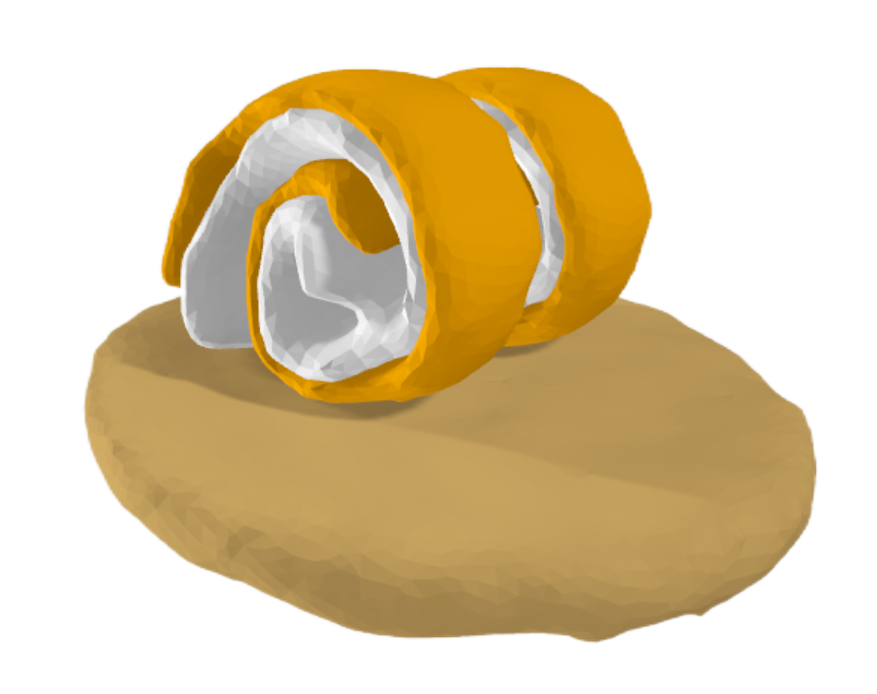
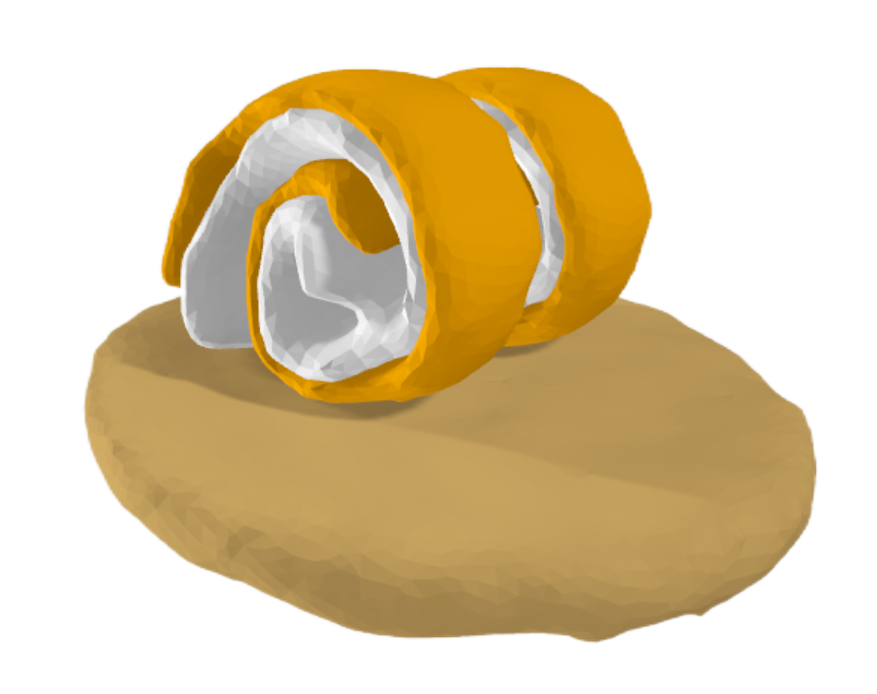
 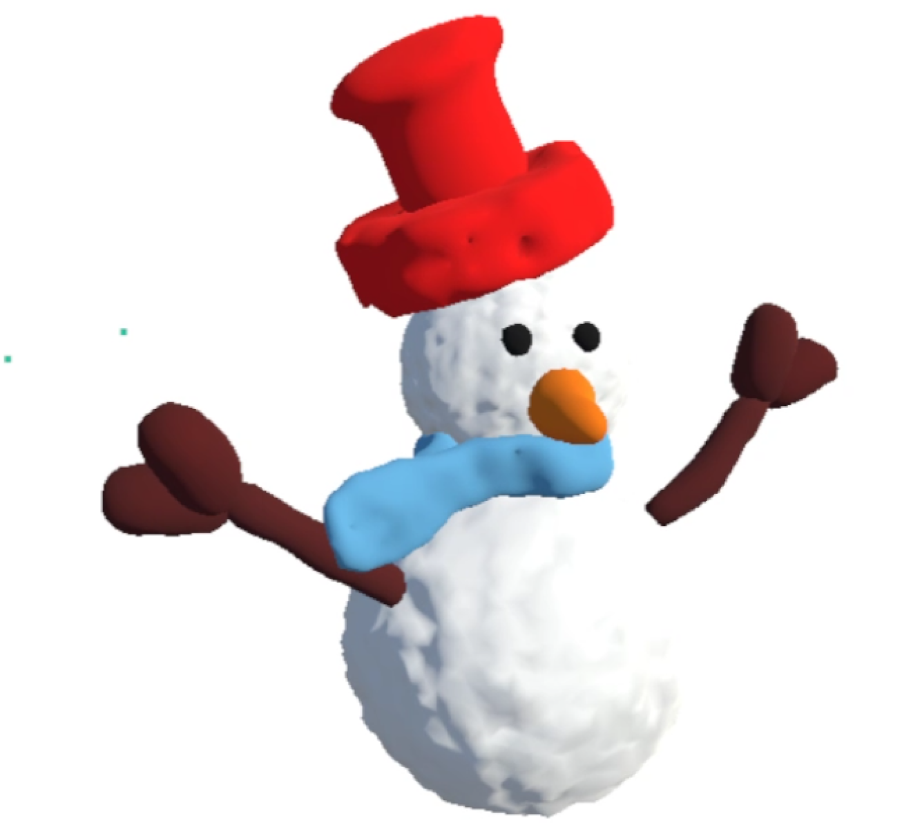
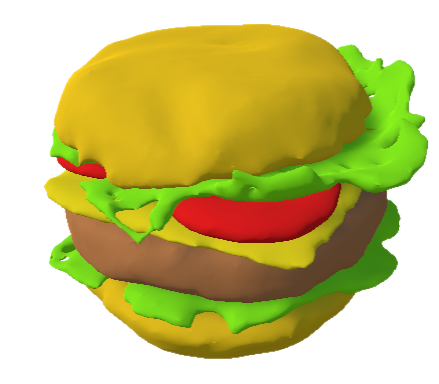
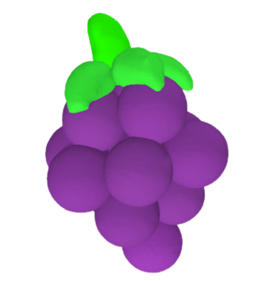
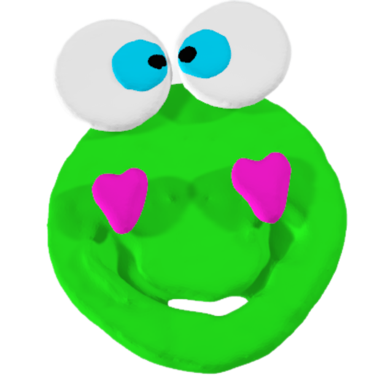
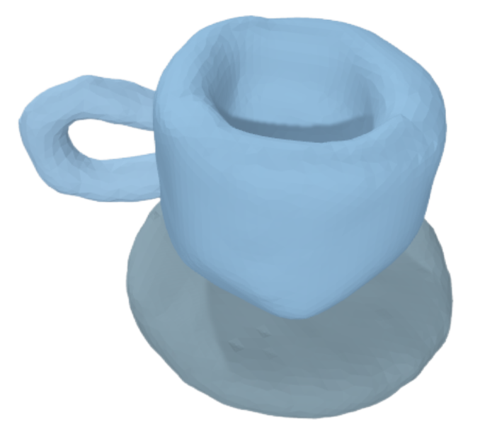
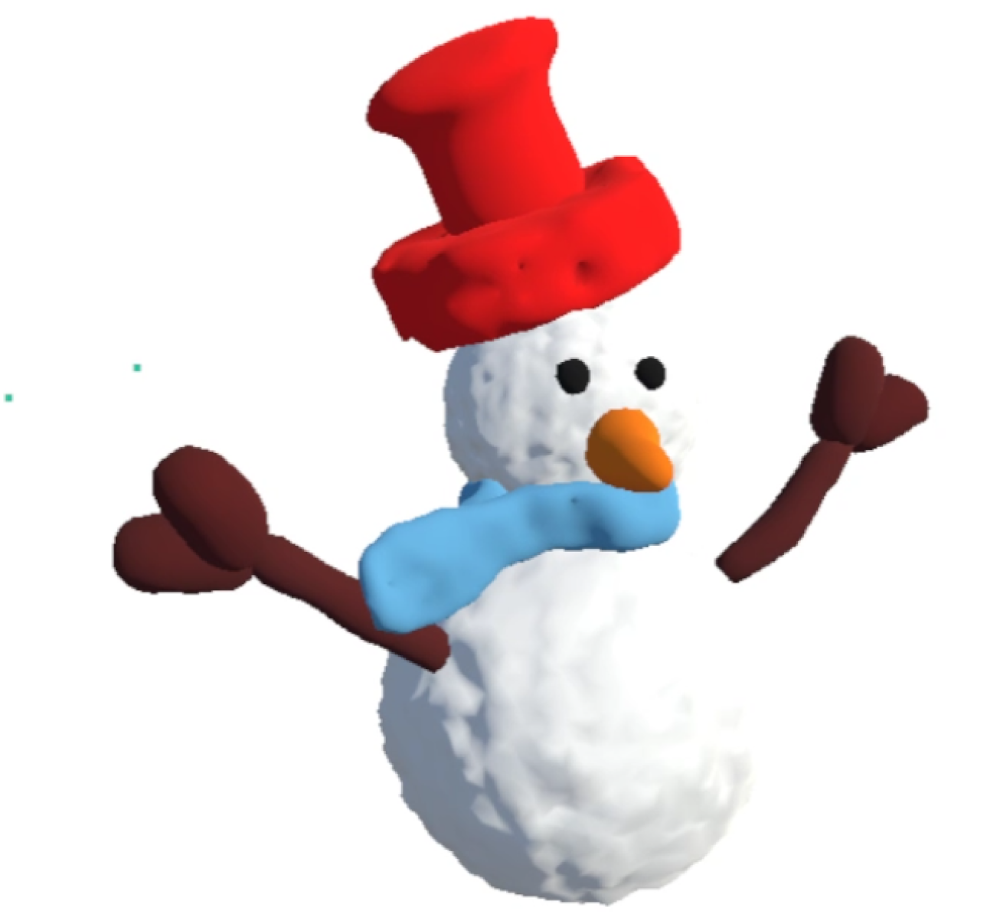
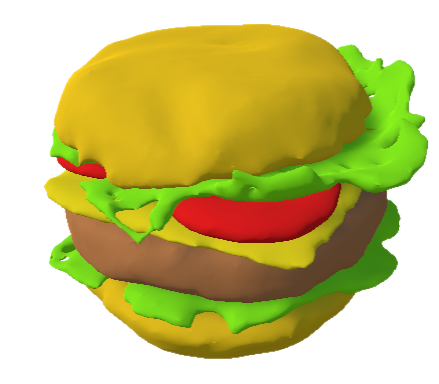
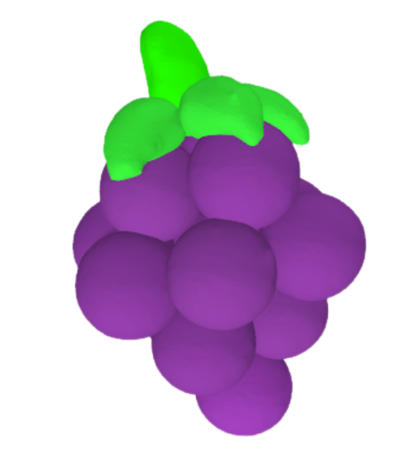
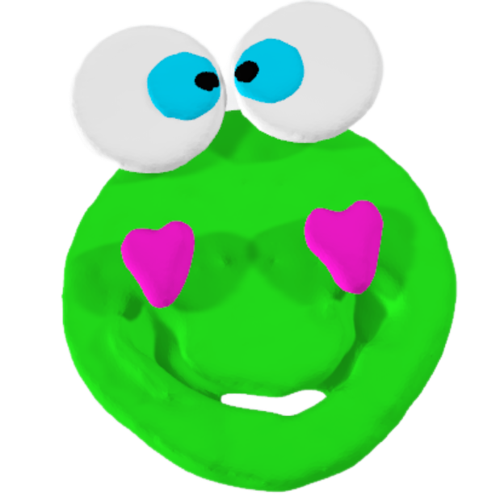
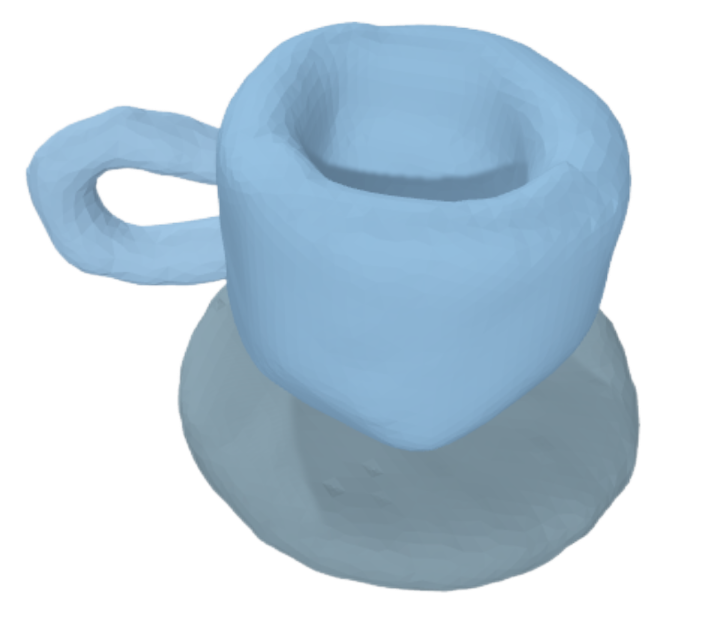
Click on an image to explore the 3D model in the viewer

3D GS Object Editing Examples

Click on an image to explore the 3D GS in the viewer

System Pipeline
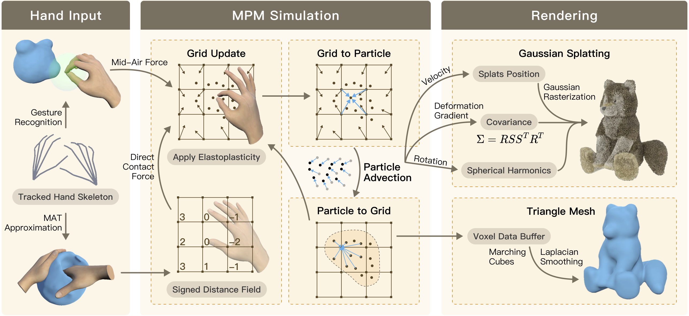Citation
@article{luo2024vrdoh,
title={VR-Doh: Hands-on 3D Modeling in Virtual Reality},
author={Luo, Zhaofeng* and Cui, Zhitong* and Luo, Shijian and Chu, Mengyu and Li, Minchen},
journal={arXiv preprint arXiv:2412.00814},
year={2024}
}